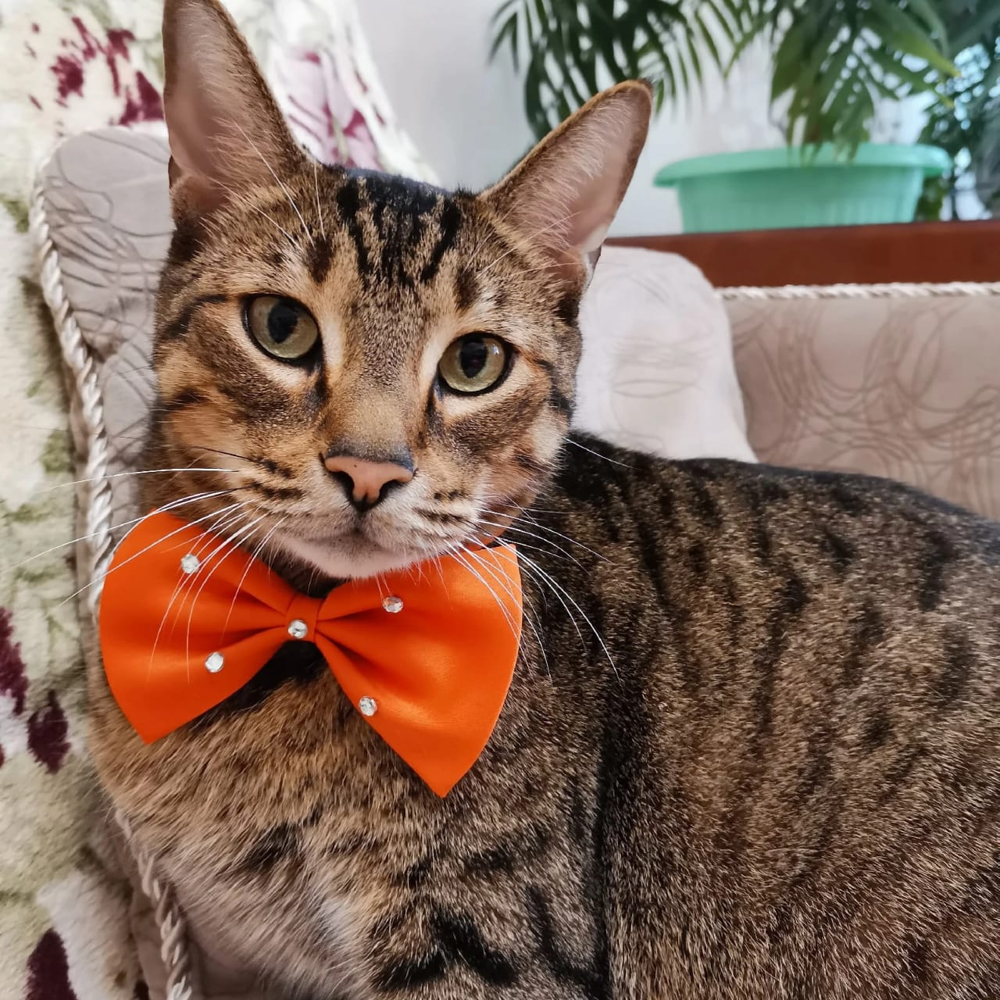

Другие названия: пикси-боб, короткохвостый эльф
Пиксибоб радует даже искушённых любителей животных. Кому не хочется подружиться с настоящей рысью, только домашней и ласковой? Короткохвостые создания с пятнистой «шубкой» к вашим услугам!